Radio Mundial manual
Tap the world map, pick a country and a station, and it plays. This guide covers installation and everything the radio can do.

1. What you need
- Freenove FNK0104 board: ESP32-S3 with a 2.8" capacitive touch screen and a small built-in speaker.
- USB-C data cable. Some cables only charge, and those will not work for installing.
- A computer with Chrome or Edge, only for the installation. Phones do not work for this step.
- 2.4 GHz Wi-Fi. The board cannot use 5 GHz networks.
- A 3D-printed case is optional. See the small case files.


The radio stays plugged in over USB-C: it has no battery. No account and nothing to pay for. The only soldering is to lengthen the speaker cable, explained below.
2. Build the case
You can skip this if you only want to try the radio: it works without a case. The board's own small speaker is enough for the small case.
| You need | |
|---|---|
| Screws for the board | 4 × M3 × 5 mm (M3 × 4 also works). Not longer than 5 mm: a 6 mm screw hits the bottom of the post. |
| Screws for the back cover | 4 × M3 × 8 mm. |
| Speaker | The one that comes with the board, with its cable lengthened. |
| Optional | Hot glue, soldering iron, a piece of two-wire cable and heat-shrink tubing. |
| Time and filament | |
|---|---|
| Front | About 1 h, 31 g |
| Back cover | About 45 min, 18 g |
| PETG, 0.2 mm layers, 0.4 mm nozzle, 6 walls, 15 % infill, no supports. Times measured on a Bambu Lab P2S: other printers will differ. | |
- Print the front and the back cover.
- Lengthen the speaker cable. The speaker that comes with the board has a short cable that does not reach the grille. Cut it, solder a piece of wire in between and cover each joint with heat-shrink tubing. If you would rather not solder, buy the same kind of speaker with a longer cable.
- Screw the board into the front with the 4 short screws, with the screen in its window and the USB-C port facing its opening, at the end opposite the speaker. Check the orientation: with the radio standing on its feet, the screen must be the right way up. If you only see the image the right way up with the feet pointing upwards, the board is in the wrong way round.
- Place the speaker behind the grille. A few dots of hot glue keep it in place: recommended, not essential.
- Close the back cover with the 4 long screws and plug in the USB-C cable.
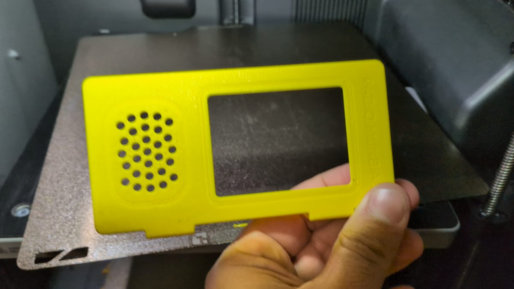
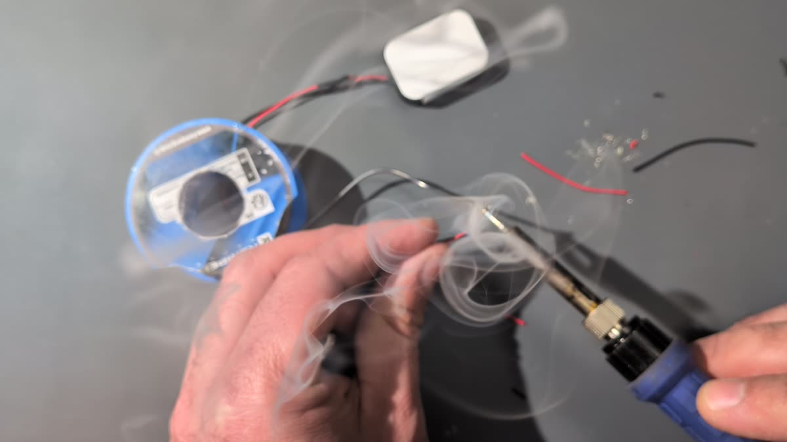
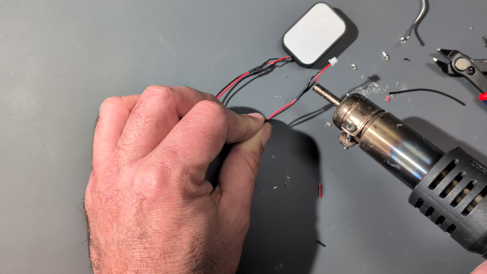
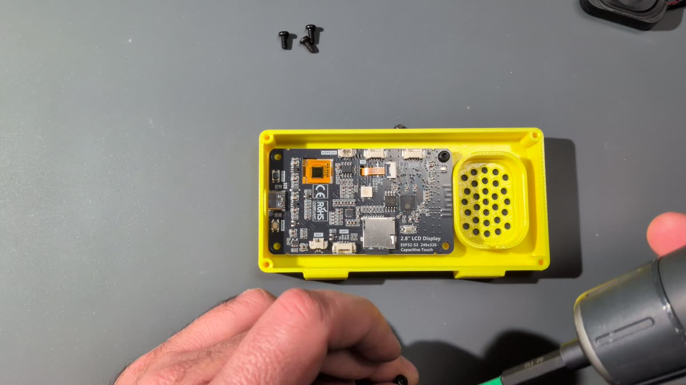
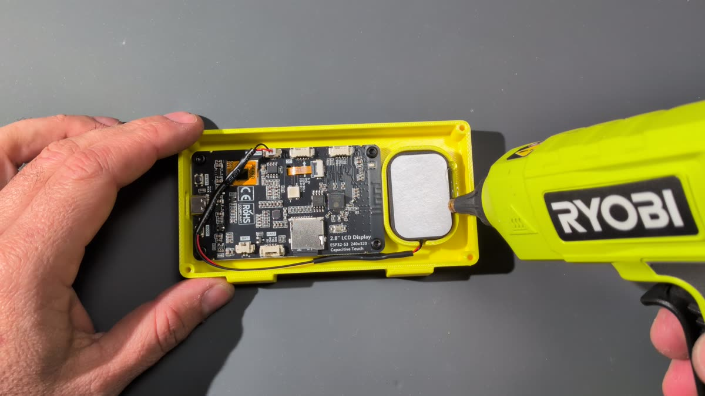
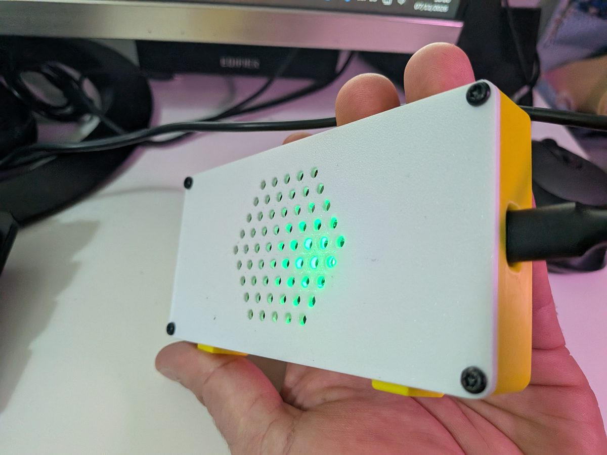
3. Install
Installing erases whatever was on the board and takes 1 or 2 minutes.
- Connect the board to your computer with the USB cable.
- Open the install page in Chrome or Edge:
Open the install page - Click Install Radio Mundial, choose the board's port in the browser window and confirm.
- Wait until it finishes. Do not unplug the board while it installs.
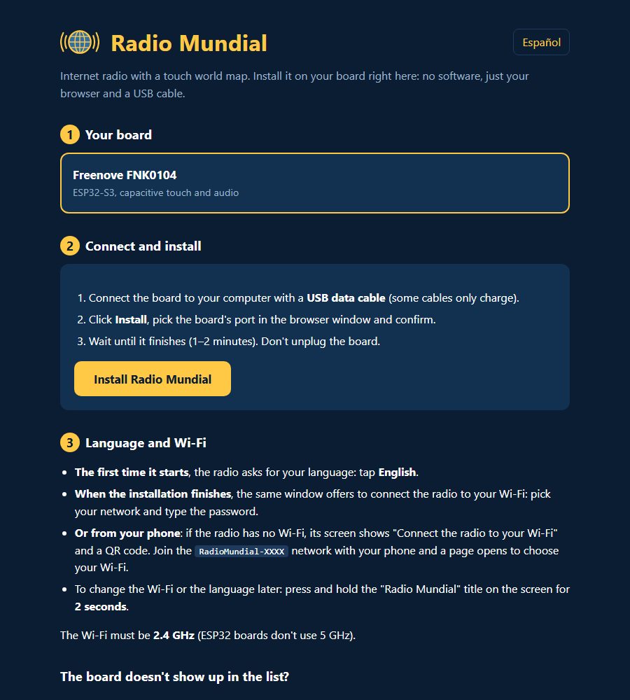
4. First start and Wi-Fi
The first time it starts, the radio asks for your language.
Then connect it to your Wi-Fi in one of these two ways:
- From the computer: when the installation finishes, the same window offers to connect the radio. Choose your network and type the password.
- From your phone: if the radio has no Wi-Fi, its screen shows the steps and a QR code. Scan it or join the RadioMundial-XXXX network, and a page opens where you choose your Wi-Fi.
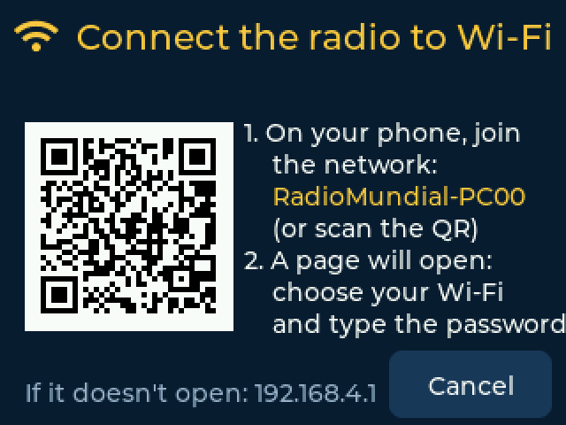
The radio remembers the network. From then on, it connects by itself.
5. Find and play stations
- Tap a region of the world map.
- Tap a country on the regional map, or use the list button at the top right to see all its countries.
- Tap a station and it starts playing.


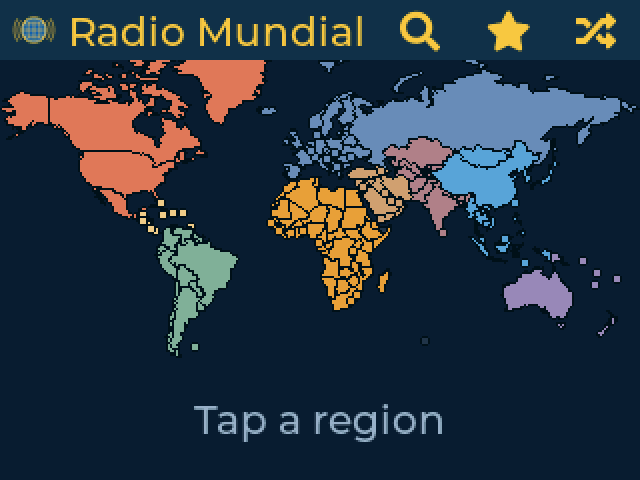
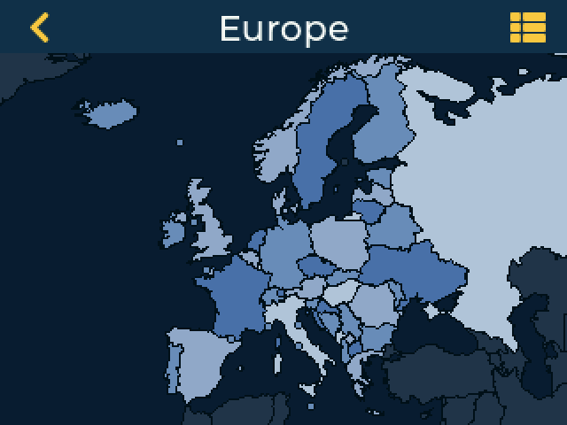
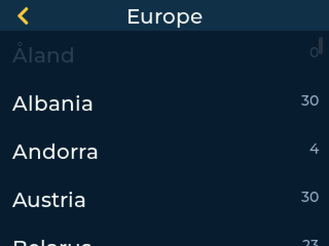
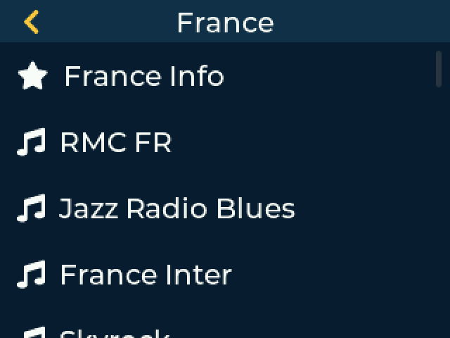
The buttons at the top of the map are search, favorites and random station, which plays something from anywhere in the world.
Stations that fail twice in a row move to the end of the list and turn gray. They are never deleted, and go back to their place as soon as they play again.

6. While a station plays

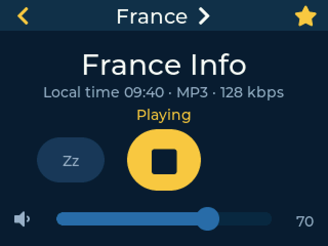
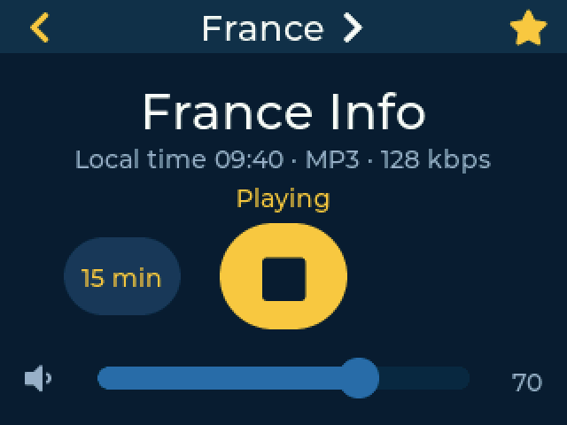
| Control | What it does |
|---|---|
| Country name, at the top | Goes to that country's station list. |
| Star | Adds or removes the station from your favorites. |
| Big button | Stops or plays the station. |
| Zz | Sleep timer. Each tap changes it: 15, 30, 60 or 90 minutes, then off. In the last minute the volume fades, then the radio powers off. |
| Slider | Volume. |
You also see the local time of the station's country and, if the station sends it, the song title. In countries with several time zones, the time is that of the capital or main city. Song titles in Arabic, Chinese, Japanese or Korean are not shown, because the screen font does not include those alphabets.
When you turn the radio on, the last station starts playing again.
7. Favorites, recent and search
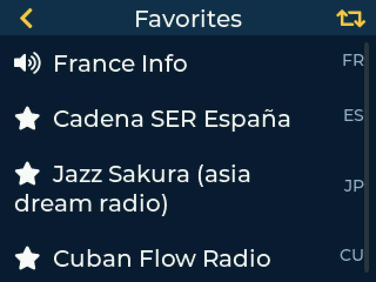
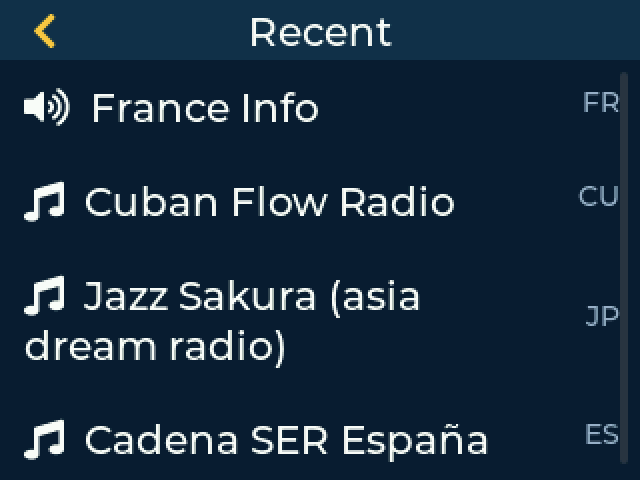
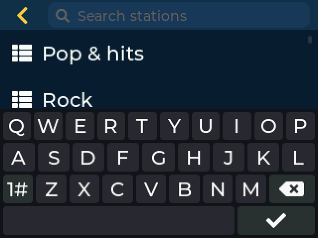
8. Settings
Press and hold the “Radio Mundial” title on the map for 2 seconds.
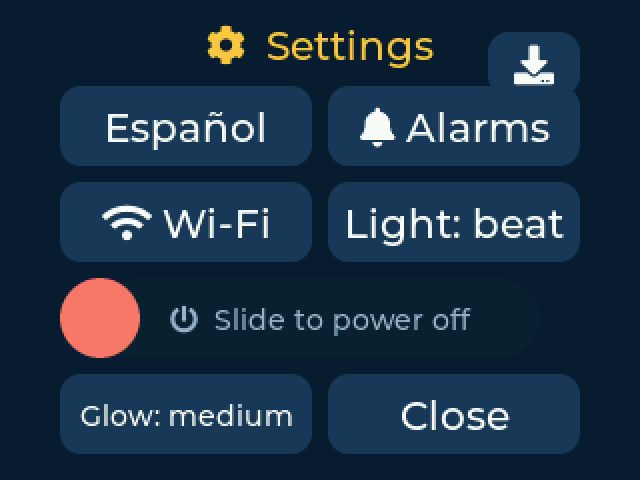
| Button | What it does |
|---|---|
| Download icon, top right | Updates the stations. |
| Español / English | Changes the language. |
| Alarms | Opens your alarms. |
| Wi-Fi | Connects the radio to another network. |
| Light | Board LED: beat (rainbow that pulses with the music), on (the color of the station's region) or off. |
| Glow | LED brightness: low, medium or high. |
| Slide to power off | Drag the red button to the right. Touch the screen to turn it back on. If an alarm is set, the radio wakes up by itself. |

9. Alarms
You can have up to 5. Open them from Settings, then tap one to edit it or tap New alarm.
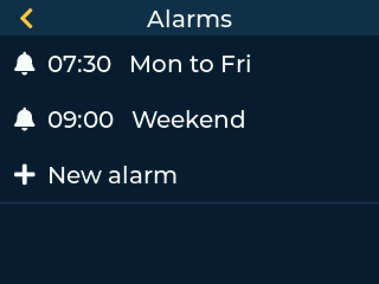
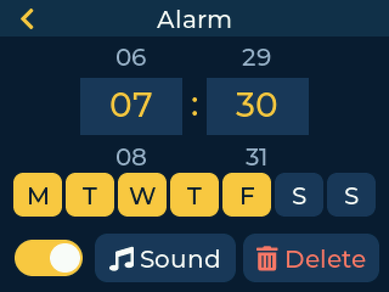
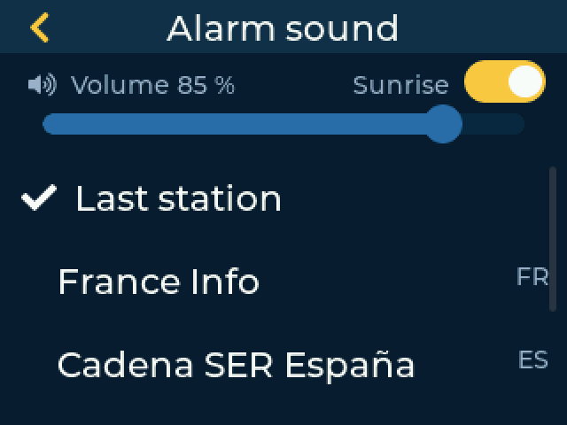
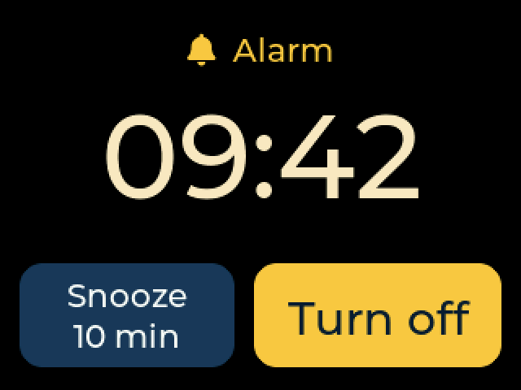
- The sound starts low and rises gradually. If you do not turn it off, it stops by itself after 30 minutes.
- Station: the last one you played or one of your favorites. If it does not respond or there is no internet, the radio plays a built-in tone.
- Sunrise: during the 10 minutes before the alarm, the LED slowly rises from red to warm yellow, at full brightness even if yours is set lower.
- If you are already listening to a station, it simply keeps playing.
- The radio can be powered off with the slider and it wakes up for the alarm, but it must stay plugged in. If you power it off during a snooze, that repeat is canceled.
10. Update the stations
Stations change address over time, so the list can be renewed without installing anything again.
- Open Settings and tap the download icon at the top right.
- If there is a new list, tap Update. The music stops while it installs.
- Wait: the radio restarts by itself when it finishes.
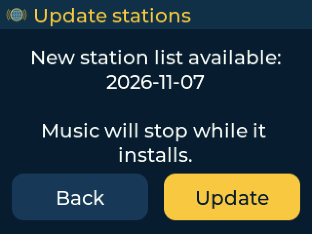
Try not to unplug it during the update. If the power goes out, nothing breaks: the radio goes back to its original list and you can update again. Your favorites, alarms and Wi-Fi are not affected.
11. Sleep screen
After 2 minutes without touching the radio, the screen dims and rotates through the clock, the weather and the air quality. Touch it to go back. The music keeps playing.
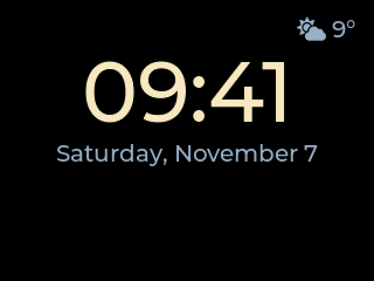
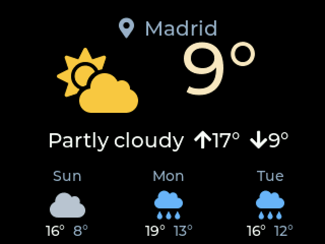
The radio works out your approximate location and time zone from your internet connection, so you do not need to set anything. The location can be wrong if you use a VPN.
12. Troubleshooting
| Problem | What to try |
|---|---|
| The Install button does not appear | Use Chrome or Edge on a computer, not on a phone. |
| The port is not listed | Use a data cable and another USB port, or hold BOOT while plugging in. |
| It does not connect to the Wi-Fi | Make sure the network is 2.4 GHz. Check the password in Settings → Wi-Fi. |
| “This station could not be played” | The station may be down. Try another one. If many fail, check your internet connection. |
| A station is gray | It failed twice. You can still tap it: if it plays, it goes back to its place. |
| No sound | Check the volume. If the station appears as playing but you hear nothing, unplug the radio for a few seconds and plug it in again. |
| The time or weather is wrong | They are based on your internet connection. A VPN can change them. |
| Nothing helps | Run the install page again, or report the problem on GitHub. |